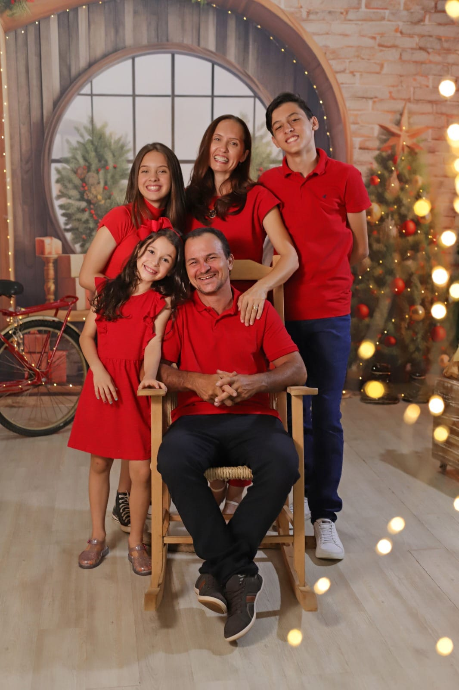
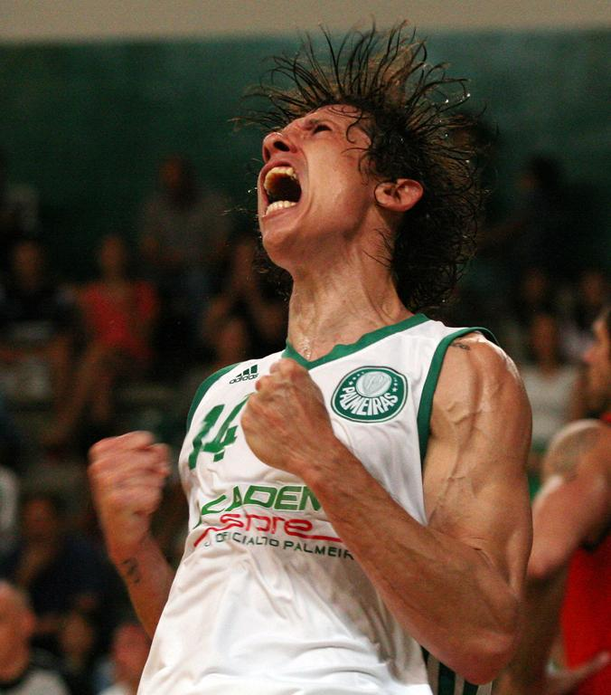
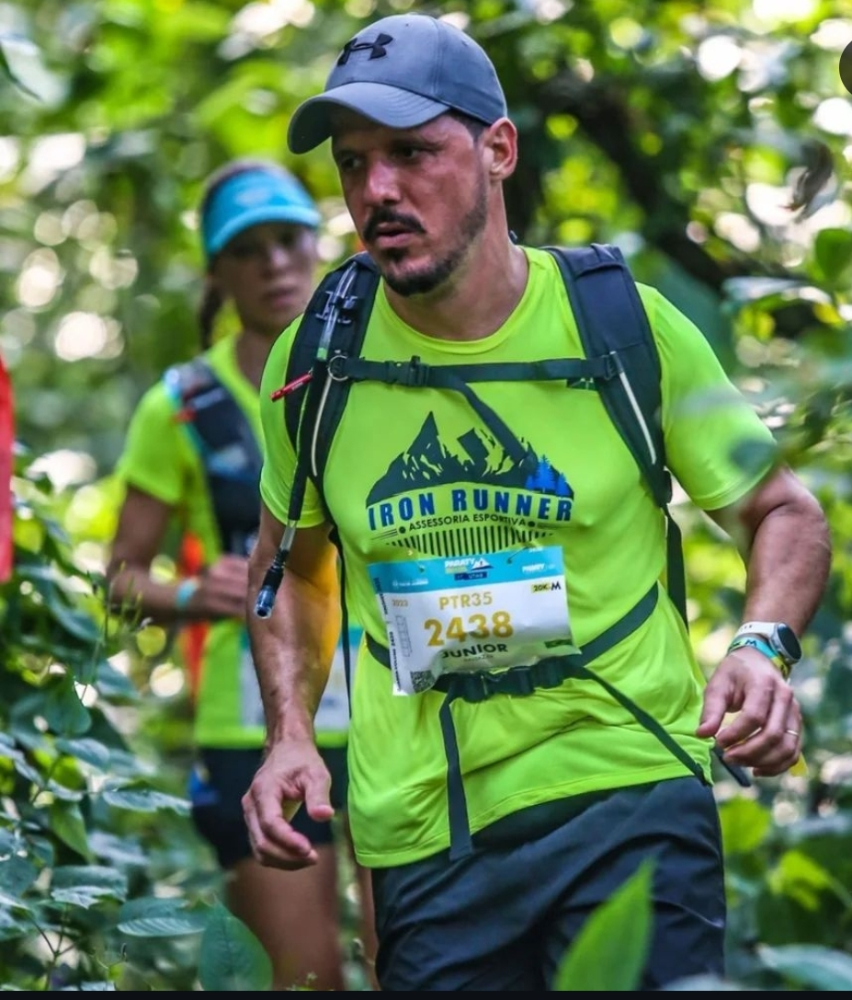
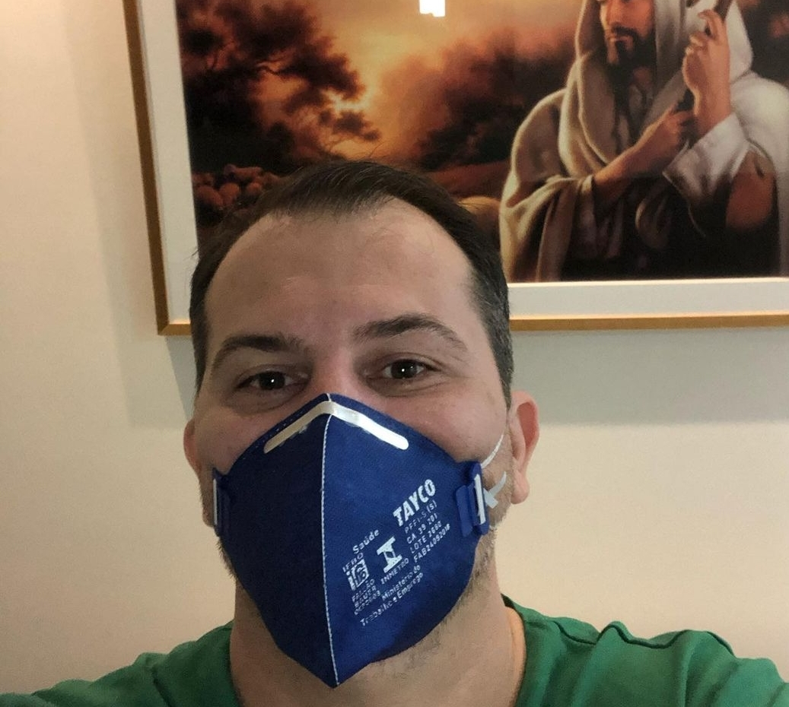

Um pouco sobre minha vida
Vou falar um pouquinho da minha vida.
Sou irmã do meio, tenho um irmão mais velho O Pedro que tem 18 anos do Terceiro ano de informática
tenho uma irmã mais nova A Geovana "Gege"de 9 anos que está no 4ºAno
Minha mãe se chama Sabrina e meu pai Vitor.

Na minha família parte de mãe tenho 2 tios. Minha mãe que é a mais velha, é artesã🎀. O Júnior irmão do meio trabalha com 👟, ele tem uma franquia em Minas e o Neto(Meu padriho) que é o mais novo, ele era jogador profissional de basquete, jogou no Pinheiros e no Palmeiras mas agora ele é Engenheiro civil.


Parte de pai tambem tenho dois tios, o Leonardo que é o mais vlho, que é médico em Manaus. Meu pai do meio que é Toneiro, ele tem uma tornearia aqui em vha e o Gustavo mais novo que é Veterinário.


Djuly
Eu tenho uma cachorrinha, minha carrapatinha que me segue o tempo todo.
Ela ama dormir comigo, fica deitada em umas cadeiras da mesa do jantar enquanto eu como.
Quando da 6:00 ela fica esperando minha mãe abrir a porta para ela sair e fazer as necessidades, depois ela entra e vai pedir carinhos para os meus pais logo depois vai no meu quarto pra tomar meu travesseiro e ficar deitada comigo.
Chamo ela de Djuliana ou Dju Dju, "amoi" da minha vida, aaaaa quem nunca né, teve um bichinho que trata igual um neném.